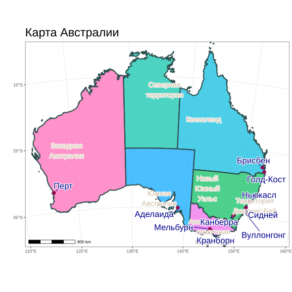

# ==============================================================================
# Карта Австралии со штатами и городами
# ==============================================================================
# --- Директория ------------------------------------------------------------
root <- "D:/users/platt/shapefile/auxiliary/naturalearth/5.1.2"
output_dir <- file.path(root, "output")
if (F & !dir.exists(output_dir)) {
dir.create(output_dir, recursive = TRUE)
message("Done")
}
# --- Библиотеки -------------------------------------------------------------
library(sf)Linking to GEOS 3.13.1, GDAL 3.11.4, PROJ 9.7.0; sf_use_s2() is TRUE
Attaching package: 'dplyr'The following objects are masked from 'package:stats':
filter, lagThe following objects are masked from 'package:base':
intersect, setdiff, setequal, unionlibrary(ursa)
# Загрузка данных ---------------------------------------------------------------
countries <- ursa::spatial_read(file.path(root, paste0("10m_cultural/ne_10m_admin_0_countries.shp")))
states <- ursa::spatial_read(file.path(root,paste0("10m_cultural/ne_10m_admin_1_states_provinces.shp")))
cities <- ursa::spatial_read(file.path(root,paste0("10m_cultural/ne_10m_populated_places.shp")))
aus_states <- states[states$admin == "Australia", ]
cities_aus <- cities[cities$ADM0NAME == "Australia" & cities$POP_MAX > 200000, ]
state_labels <- states[states$admin == "Australia", c("name_ru")]
aus_states_proj <- st_transform(aus_states, 3577)
aus_city_proj <- st_transform(cities_aus, 3577)
state_labels_proj <- st_transform(state_labels, 3577) %>%
mutate(
label_point = st_point_on_surface(geometry),
name_label = gsub(" ", "\n", name_ru)
) %>%
filter(!name_ru %in% c("Виктория", "Маккуори", "Тасмания", "остров Лорд-Хау"))
# --- Карта ---------------------------------------------------------------
map_plot <- ggplot() +
geom_sf(data = aus_states_proj, aes(fill = name),
color = "darkslategrey", size = 1, alpha = 0.7) +
geom_sf(data = aus_city_proj, color = "deeppink4", size = 3) +
geom_text_repel(data = state_labels_proj,
aes(label = name_label, geometry = geometry),
color = "bisque3",
stat = "sf_coordinates",
size = 5,
bg.color = "white")+
geom_text_repel(data = aus_city_proj,
aes(label = NAME_RU, geometry = geometry),
stat = "sf_coordinates",
min.segment.length = 0,box.padding = 0.5,
point.padding = 0.3,force = 2,
size = 6,color = "darkblue",
bg.color = "white", bg.r = 0.1) +
labs(title = "Карта Австралии") +
theme_bw()+
theme(title = element_text(size = 20))+
xlab(" ") + ylab(" ")+
theme(legend.position = "none") +
coord_sf(crs = 3577,
xlim = c(-2000000, 2500000),
ylim = c(-4500000, -1000000),
expand = FALSE) +
scale_x_continuous(breaks = seq(110, 160, by = 10)) +
scale_y_continuous(breaks = seq(-45, -10, by = 10)) +
annotation_scale(location = "bl", width_hint = 0.2)